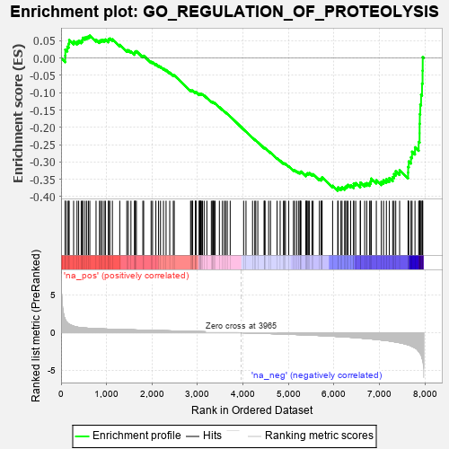

| | | Dataset | 7d |
| Phenotype | NoPhenotypeAvailable |
| Upregulated in class | na_neg |
| GeneSet | GO_REGULATION_OF_PROTEOLYSIS |
| Enrichment Score (ES) | -0.38324353 |
| Normalized Enrichment Score (NES) | -1.2802185 |
| Nominal p-value | 0.0832444 |
| FDR q-value | 0.49986473 |
| FWER p-Value | 1.0 |
Table: GSEA Results Summary

Fig 1: Enrichment plot: GO_REGULATION_OF_PROTEOLYSIS
Profile of the Running ES Score & Positions of GeneSet Members on the Rank Ordered List
| PROBE | GENE SYMBOL | GENE_TITLE | RANK IN GENE LIST | RANK METRIC SCORE | RUNNING ES | CORE ENRICHMENT | | 1 | WFDC8 | | | 91 | 1.777 | 0.0069 | No |
| 2 | UBE2K | | | 94 | 1.739 | 0.0247 | No |
| 3 | DESI1 | | | 138 | 1.332 | 0.0331 | No |
| 4 | AXIN1 | | | 166 | 1.159 | 0.0418 | No |
| 5 | PZP | | | 178 | 1.129 | 0.0521 | No |
| 6 | HGF | | | 276 | 0.870 | 0.0488 | No |
| 7 | GSK3A | | | 351 | 0.745 | 0.0471 | No |
| 8 | BAX | | | 387 | 0.711 | 0.0500 | No |
| 9 | SUFU | | | 443 | 0.665 | 0.0499 | No |
| 10 | LRP1 | | | 470 | 0.648 | 0.0533 | No |
| 11 | CDC20 | | | 480 | 0.644 | 0.0589 | No |
| 12 | HTRA2 | | | 527 | 0.621 | 0.0595 | No |
| 13 | NLE1 | | | 565 | 0.609 | 0.0611 | No |
| 14 | FBXW8 | | | 601 | 0.594 | 0.0628 | No |
| 15 | GLMN | | | 632 | 0.583 | 0.0650 | No |
| 16 | CLN8 | | | 769 | 0.539 | 0.0533 | No |
| 17 | NRDC | | | 845 | 0.521 | 0.0491 | No |
| 18 | IGBP1 | | | 869 | 0.514 | 0.0515 | No |
| 19 | TMTC3 | | | 903 | 0.506 | 0.0526 | No |
| 20 | ADRM1 | | | 948 | 0.496 | 0.0521 | No |
| 21 | WDR48 | | | 975 | 0.489 | 0.0539 | No |
| 22 | AKT1 | | | 1040 | 0.476 | 0.0506 | No |
| 23 | TAF9 | | | 1046 | 0.475 | 0.0550 | No |
| 24 | AIFM1 | | | 1072 | 0.469 | 0.0566 | No |
| 25 | SRC | | | 1128 | 0.459 | 0.0544 | No |
| 26 | PARL | | | 1290 | 0.432 | 0.0383 | No |
| 27 | RBX1 | | | 1445 | 0.401 | 0.0228 | No |
| 28 | TIMP2 | | | 1478 | 0.394 | 0.0228 | No |
| 29 | SCO1 | | | 1536 | 0.385 | 0.0195 | No |
| 30 | BIRC8 | | | 1615 | 0.372 | 0.0134 | No |
| 31 | N4BP1 | | | 1622 | 0.370 | 0.0165 | No |
| 32 | DERL2 | | | 1632 | 0.368 | 0.0192 | No |
| 33 | CSN2 | | | 1656 | 0.363 | 0.0200 | No |
| 34 | FNIP1 | | | 1798 | 0.338 | 0.0055 | No |
| 35 | FMR1 | | | 1816 | 0.334 | 0.0068 | No |
| 36 | BRSK2 | | | 1979 | 0.308 | -0.0107 | No |
| 37 | RAF1 | | | 2011 | 0.303 | -0.0115 | No |
| 38 | SART3 | | | 2084 | 0.293 | -0.0176 | No |
| 39 | PSME4 | | | 2143 | 0.285 | -0.0221 | No |
| 40 | SYK | | | 2186 | 0.278 | -0.0246 | No |
| 41 | PSMF1 | | | 2251 | 0.268 | -0.0300 | No |
| 42 | REST | | | 2308 | 0.259 | -0.0344 | No |
| 43 | HIPK2 | | | 2389 | 0.247 | -0.0421 | No |
| 44 | UBXN1 | | | 2467 | 0.232 | -0.0495 | No |
| 45 | UBAC2 | | | 2488 | 0.229 | -0.0497 | No |
| 46 | CLN6 | | | 2847 | 0.177 | -0.0936 | No |
| 47 | UCHL5 | | | 2864 | 0.172 | -0.0939 | No |
| 48 | PDCD5 | | | 2885 | 0.169 | -0.0947 | No |
| 49 | MTM1 | | | 2893 | 0.168 | -0.0938 | No |
| 50 | SOCS4 | | | 2953 | 0.157 | -0.0997 | No |
| 51 | XPO1 | | | 2960 | 0.156 | -0.0989 | No |
| 52 | MTCH1 | | | 2966 | 0.155 | -0.0979 | No |
| 53 | LEF1 | | | 3037 | 0.144 | -0.1054 | No |
| 54 | UFL1 | | | 3041 | 0.144 | -0.1042 | No |
| 55 | BIRC6 | | | 3047 | 0.143 | -0.1034 | No |
| 56 | KEAP1 | | | 3063 | 0.141 | -0.1038 | No |
| 57 | PROS1 | | | 3070 | 0.141 | -0.1031 | No |
| 58 | HDAC1 | | | 3086 | 0.138 | -0.1036 | No |
| 59 | GPX1 | | | 3109 | 0.135 | -0.1050 | No |
| 60 | EDEM2 | | | 3145 | 0.131 | -0.1081 | No |
| 61 | FZR1 | | | 3205 | 0.122 | -0.1144 | No |
| 62 | SMAD3 | | | 3303 | 0.105 | -0.1257 | No |
| 63 | RFX4 | | | 3334 | 0.099 | -0.1285 | No |
| 64 | CHFR | | | 3335 | 0.099 | -0.1275 | No |
| 65 | UBE2O | | | 3348 | 0.097 | -0.1280 | No |
| 66 | SMAD7 | | | 3369 | 0.093 | -0.1296 | No |
| 67 | DDX3X | | | 3388 | 0.091 | -0.1310 | No |
| 68 | CDK5 | | | 3480 | 0.080 | -0.1418 | No |
| 69 | PRDX5 | | | 3547 | 0.068 | -0.1495 | No |
| 70 | MAPK3 | | | 3589 | 0.062 | -0.1541 | No |
| 71 | WAC | | | 3618 | 0.056 | -0.1571 | No |
| 72 | FIS1 | | | 3654 | 0.051 | -0.1610 | No |
| 73 | HSF1 | | | 3718 | 0.039 | -0.1687 | No |
| 74 | RNF14 | | | 4013 | -0.010 | -0.2062 | No |
| 75 | SFRP2 | | | 4065 | -0.018 | -0.2125 | No |
| 76 | TIMP1 | | | 4209 | -0.043 | -0.2304 | No |
| 77 | PCID2 | | | 4258 | -0.051 | -0.2360 | No |
| 78 | PSME3 | | | 4280 | -0.056 | -0.2381 | No |
| 79 | CD109 | | | 4325 | -0.064 | -0.2430 | No |
| 80 | NEDD8 | | | 4465 | -0.087 | -0.2599 | No |
| 81 | LRRK2 | | | 4467 | -0.087 | -0.2591 | No |
| 82 | HIP1 | | | 4485 | -0.092 | -0.2603 | No |
| 83 | BAG6 | | | 4563 | -0.108 | -0.2691 | No |
| 84 | NUB1 | | | 4604 | -0.119 | -0.2729 | No |
| 85 | FBLN1 | | | 4748 | -0.149 | -0.2897 | No |
| 86 | FBXW7 | | | 4816 | -0.161 | -0.2966 | No |
| 87 | CLU | | | 4889 | -0.174 | -0.3039 | No |
| 88 | TLK2 | | | 4909 | -0.179 | -0.3045 | No |
| 89 | CASP1 | | | 4932 | -0.185 | -0.3054 | No |
| 90 | KLF4 | | | 5005 | -0.198 | -0.3125 | No |
| 91 | MMP9 | | | 5108 | -0.227 | -0.3232 | No |
| 92 | UBE2Z | | | 5137 | -0.234 | -0.3243 | No |
| 93 | HDAC6 | | | 5183 | -0.244 | -0.3276 | No |
| 94 | TMF1 | | | 5225 | -0.251 | -0.3302 | No |
| 95 | IDE | | | 5252 | -0.258 | -0.3308 | No |
| 96 | PTEN | | | 5262 | -0.261 | -0.3293 | No |
| 97 | EPHA4 | | | 5273 | -0.265 | -0.3278 | No |
| 98 | GRIN1 | | | 5381 | -0.291 | -0.3384 | No |
| 99 | PRDX3 | | | 5389 | -0.293 | -0.3363 | No |
| 100 | SUMO2 | | | 5402 | -0.296 | -0.3347 | No |
| 101 | LATS1 | | | 5412 | -0.298 | -0.3328 | No |
| 102 | IST1 | | | 5442 | -0.305 | -0.3333 | No |
| 103 | LRIG2 | | | 5460 | -0.310 | -0.3322 | No |
| 104 | TFPI2 | | | 5516 | -0.324 | -0.3359 | No |
| 105 | EDEM1 | | | 5541 | -0.331 | -0.3355 | No |
| 106 | CASP8 | | | 5678 | -0.369 | -0.3491 | No |
| 107 | CLPX | | | 5717 | -0.381 | -0.3499 | No |
| 108 | DAP | | | 5732 | -0.386 | -0.3477 | No |
| 109 | PDCL3 | | | 5738 | -0.388 | -0.3443 | No |
| 110 | TTBK1 | | | 5969 | -0.460 | -0.3689 | No |
| 111 | PLK1 | | | 6082 | -0.500 | -0.3780 | Yes |
| 112 | UBB | | | 6090 | -0.503 | -0.3737 | Yes |
| 113 | ROCK1 | | | 6152 | -0.520 | -0.3761 | Yes |
| 114 | RAG1 | | | 6176 | -0.530 | -0.3735 | Yes |
| 115 | RGN | | | 6233 | -0.547 | -0.3749 | Yes |
| 116 | TFAP4 | | | 6254 | -0.556 | -0.3717 | Yes |
| 117 | IFT52 | | | 6280 | -0.566 | -0.3690 | Yes |
| 118 | IFT57 | | | 6307 | -0.579 | -0.3663 | Yes |
| 119 | BIRC3 | | | 6366 | -0.603 | -0.3674 | Yes |
| 120 | MALT1 | | | 6432 | -0.634 | -0.3691 | Yes |
| 121 | ABCA2 | | | 6433 | -0.634 | -0.3625 | Yes |
| 122 | SOX2 | | | 6477 | -0.652 | -0.3612 | Yes |
| 123 | ROBO1 | | | 6577 | -0.699 | -0.3666 | Yes |
| 124 | CLN3 | | | 6580 | -0.699 | -0.3596 | Yes |
| 125 | RFFL | | | 6674 | -0.749 | -0.3637 | Yes |
| 126 | GSK3B | | | 6719 | -0.768 | -0.3613 | Yes |
| 127 | C2CD3 | | | 6783 | -0.802 | -0.3610 | Yes |
| 128 | ADAM9 | | | 6808 | -0.819 | -0.3555 | Yes |
| 129 | GIPC1 | | | 6819 | -0.826 | -0.3482 | Yes |
| 130 | SNX33 | | | 6930 | -0.888 | -0.3530 | Yes |
| 131 | RNF34 | | | 7040 | -0.963 | -0.3569 | Yes |
| 132 | BBS7 | | | 7089 | -0.988 | -0.3527 | Yes |
| 133 | SPON1 | | | 7151 | -1.035 | -0.3498 | Yes |
| 134 | KLKB1 | | | 7216 | -1.090 | -0.3466 | Yes |
| 135 | ASTL | | | 7290 | -1.159 | -0.3439 | Yes |
| 136 | GRN | | | 7319 | -1.194 | -0.3350 | Yes |
| 137 | WDR35 | | | 7357 | -1.225 | -0.3270 | Yes |
| 138 | CASP2 | | | 7442 | -1.322 | -0.3239 | Yes |
| 139 | PKD1 | | | 7628 | -1.611 | -0.3308 | Yes |
| 140 | PDCD6 | | | 7630 | -1.615 | -0.3141 | Yes |
| 141 | TAF1 | | | 7643 | -1.633 | -0.2986 | Yes |
| 142 | CST1 | | | 7692 | -1.746 | -0.2865 | Yes |
| 143 | BOK | | | 7715 | -1.817 | -0.2704 | Yes |
| 144 | ST18 | | | 7780 | -2.007 | -0.2577 | Yes |
| 145 | TRAF2 | | | 7861 | -2.481 | -0.2421 | Yes |
| 146 | FYN | | | 7881 | -2.622 | -0.2172 | Yes |
| 147 | CHAC1 | | | 7882 | -2.633 | -0.1897 | Yes |
| 148 | TRAF3 | | | 7886 | -2.695 | -0.1620 | Yes |
| 149 | CAV3 | | | 7896 | -2.739 | -0.1346 | Yes |
| 150 | PI16 | | | 7914 | -2.948 | -0.1061 | Yes |
| 151 | ARRB1 | | | 7935 | -3.377 | -0.0734 | Yes |
| 152 | XIAP | | | 7947 | -3.696 | -0.0363 | Yes |
| 153 | DAPK1 | | | 7950 | -3.767 | 0.0027 | Yes |
Table: GSEA details [plain text format]
Fig 2: GO_REGULATION_OF_PROTEOLYSIS: Random ES distribution
Gene set null distribution of ES for GO_REGULATION_OF_PROTEOLYSIS